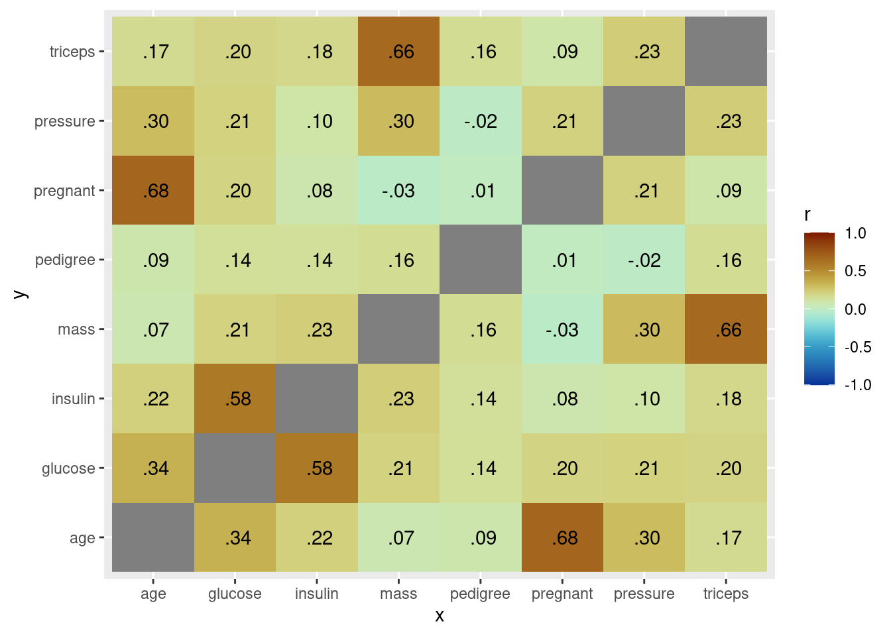

27 Class Activity 21
# load the necessary libraries
library(tidyverse)
library(tidymodels)
library(mlbench)
library(janitor)
library(parsnip)
library(kknn)
library(paletteer)
library(corrr)
library(forcats)
library(ggthemes)27.1 Group Activity 1
# Load the data
data(PimaIndiansDiabetes2)
db <- PimaIndiansDiabetes2
# correlation plot of the variables
db %>%
select(-diabetes) %>% # only numerical variables
correlate() %>%
stretch() %>%
ggplot(aes(x, y, fill = r)) +
geom_tile() +
geom_text(aes(label = as.character(fashion(r)))) +
scale_fill_paletteer_c("scico::roma", limits = c(-1, 1), direction = -1)
- Let’s perform all the steps involved in classifying whether a patient with certain glucose and insulin would have diabetes or not using
parsnippackage.
Click for answer
Answer:
# 2 Create a recipe for data pre-processing
db_recipe <- recipe(diabetes ~ ., data = db_raw) %>%
step_scale(all_predictors()) %>%
step_center(all_predictors()) %>%
prep()
# 3 Apply the recipe to the data set
db_scaled <- bake(db_recipe, db_raw)
# 4 Create a model specification
knn_spec <- nearest_neighbor(mode = "classification",
engine = "kknn",
neighbors = 5)
# 5 Fit the model on the pre-processed data
knn_fit <- knn_spec %>%
fit(diabetes ~ ., data = db_scaled)
# 6 Classify
# These are standardized value!!
new_observations <- tibble(glucose = c(1, 2), insulin = c(-1, 1))
predict(knn_fit, new_data = new_observations)# A tibble: 2 × 1
.pred_class
<fct>
1 neg
2 pos - We already know the labels of some of the patients in the dataset. How well does the model predict their diabetes status? We will see more of this in the coming lectures, but for now try to compare the results for the first 10 cases in the dataset.
Click for answer
Answer:
scaled_observations <- db_scaled[1:50,]
predictions <- predict(knn_fit, new_data = scaled_observations)
bind_cols(scaled_observations, predictions, db_raw %>%
select(diabetes) %>%
slice(1:50)) %>% knitr::kable()| glucose | insulin | diabetes…3 | .pred_class | diabetes…5 |
|---|---|---|---|---|
| -1.0896533 | -0.5221747 | neg | neg | neg |
| 0.4657189 | 0.1005024 | pos | pos | pos |
| -1.4460927 | -0.5726620 | pos | neg | pos |
| 2.4099341 | 3.2559608 | pos | pos | pos |
| 2.1507054 | 5.8055711 | pos | pos | pos |
| 1.4054229 | 0.1594043 | pos | pos | pos |
| -0.1499493 | 0.6222049 | pos | pos | pos |
| -0.6360031 | -0.6147348 | neg | neg | neg |
| -0.2471600 | -0.5053456 | pos | neg | pos |
| 0.1092794 | 0.6642776 | neg | neg | neg |
| 0.6601404 | -0.0846178 | pos | pos | pos |
| 0.0768759 | -0.3454690 | pos | neg | pos |
| -0.8304246 | -0.1351051 | neg | neg | neg |
| 0.7249476 | -0.3875418 | neg | neg | neg |
| 1.1461942 | 0.7484232 | pos | pos | pos |
| -1.1220569 | -0.8587569 | neg | neg | neg |
| -0.6360031 | 0.3024518 | neg | neg | neg |
| -0.3767744 | 0.4286701 | pos | neg | pos |
| 1.8590732 | -0.7241240 | neg | pos | neg |
| 1.5674409 | 0.7063504 | pos | pos | pos |
| -0.6360031 | -0.6231494 | neg | neg | neg |
| -0.7008102 | -1.0102189 | neg | neg | neg |
| -1.1220569 | -1.1196081 | neg | neg | neg |
| 1.7294588 | 1.2112238 | pos | pos | pos |
| 0.8869655 | 1.5646351 | neg | pos | neg |
| 2.0858983 | 1.2448820 | pos | pos | pos |
| -0.7332138 | -0.3875418 | neg | neg | neg |
| -0.5711959 | -0.1182760 | neg | neg | neg |
| 0.5953333 | -0.2360798 | neg | pos | neg |
| -0.8952318 | -0.9933898 | neg | neg | neg |
| 0.7573512 | -0.4716874 | neg | neg | neg |
| -0.7332138 | -0.5558329 | pos | neg | pos |
| 0.5305261 | -0.1351051 | neg | neg | neg |
| 0.2064902 | 0.9587871 | neg | neg | neg |
| -1.2840748 | -0.7157095 | neg | neg | neg |
| -0.4091780 | -0.2613235 | neg | neg | neg |
| -0.7332138 | -0.7157095 | neg | neg | neg |
| 0.4333153 | -0.3875418 | pos | pos | pos |
| 0.0120687 | 0.1678189 | neg | neg | neg |
| -1.3488820 | -0.9092442 | neg | neg | neg |
| 0.6277368 | -0.7746114 | neg | neg | neg |
| 0.6925440 | 0.6053758 | neg | neg | neg |
| -1.6729179 | -0.6736367 | neg | neg | neg |
| -0.9600389 | -0.7746114 | neg | neg | neg |
| -0.0203349 | 0.5380593 | pos | neg | pos |
| -1.3488820 | -0.9765607 | neg | neg | neg |
| 0.1092794 | -0.0341305 | neg | neg | neg |
| 0.6925440 | -0.1351051 | neg | pos | neg |
| -1.2840748 | -1.1616809 | neg | neg | neg |
| -0.8952318 | -1.0102189 | pos | neg | pos |
What is the accuracy percentage?
Answer:
[1] 0.78- Repeat part b. with a different model fitted with different number of neighbors. See if the accuracy percentage change in this new setting.
Click for answer
Answer:
knn_spec <- nearest_neighbor(mode = "classification",
engine = "kknn",
weight_func = "rectangular",
neighbors = 3)
knn_fit <- knn_spec %>%
fit(diabetes ~ ., data = db_scaled)
scaled_observations <- db_scaled
predictions <- predict(knn_fit, new_data = scaled_observations)
# bind_cols(scaled_observations, predictions, db_raw %>%
# select(diabetes)) %>% knitr::kable()
sum(predictions == db_raw %>% select(diabetes))/392[1] 0.8239796